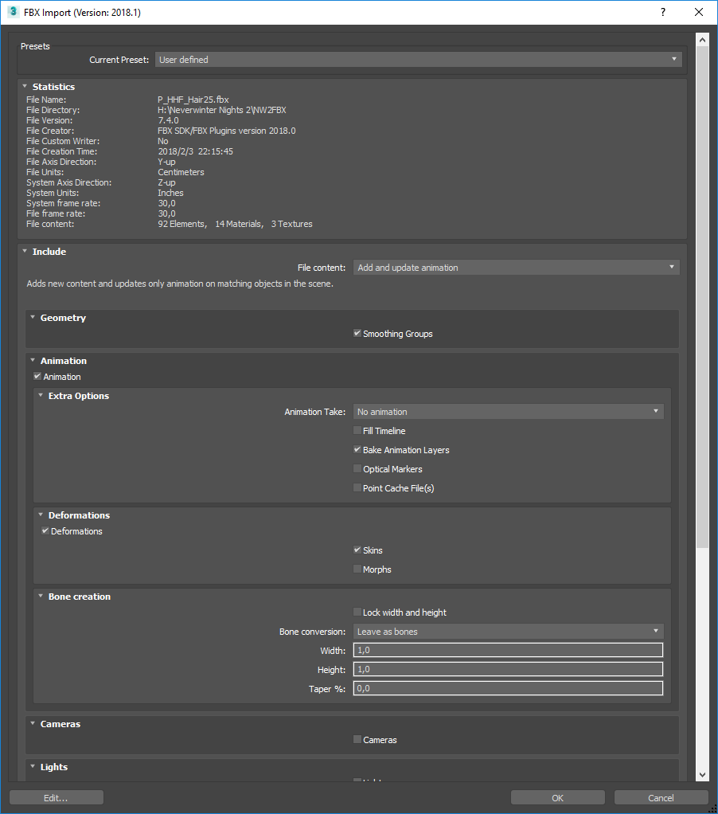
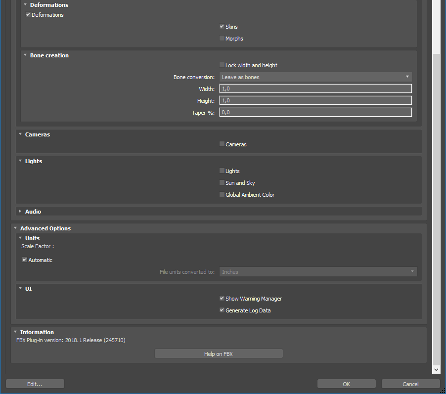

Tutorial: Convert MDB/GR2 to FBX
Converting MDB/GR2 to FBX
Open Windows Explorer and select one or more MDB files and/or one or more GR2 files. Drag the selected files and drop on nw2fbx.exe (this file is located at the MDK directory). The outputs are:
- log.txt
- One FBX containing the conversion of all the input files. The name of the FBX is the name of file that was clicked when starting the drag operation but with ‘.fbx’ extension.
- Texture files used by the passed MDB files only if they are found in
NWN2_directory/Data/NWN2_Materials*.zip(they are automatically extracted) and if they don’t already exist in the output directory (they are never overwrited).
Importing a FBX into 3ds Max 2018
This is an example of import options that seem to work:
 